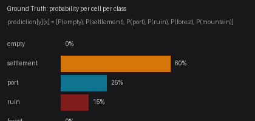

Astar Island Scoring
Score Formula
Your score is based on entropy-weighted KL divergence between your prediction and the ground truth.
Ground Truth
For each seed, the organizers pre-compute ground truth by running the simulation hundreds of times with the true hidden parameters. This produces a probability distribution for each cell.
For example, a cell might have ground truth [0.0, 0.60, 0.25, 0.15, 0.0, 0.0] — meaning 60% chance of Settlement, 25% Port, 15% Ruin, after 50 years.

KL Divergence
For each cell, the KL divergence measures how different your prediction is from the ground truth:
KL(p || q) = Σ pᵢ × log(pᵢ / qᵢ)
Where p = ground truth, q = your prediction. Lower KL = better match.
Entropy Weighting
Not all cells are equally important. Static cells (ocean stays ocean, mountain stays mountain) have near-zero entropy and are excluded from scoring.
Only dynamic cells (those that change between simulation runs) contribute to your score, weighted by their entropy:
entropy(cell) = -Σ pᵢ × log(pᵢ)
Cells with higher entropy (more uncertain outcomes) count more toward your score. This focuses scoring on the interesting parts of the map.
Final Score
weighted_kl = Σ entropy(cell) × KL(ground_truth[cell], prediction[cell])
─────────────────────────────────────────────────────────
Σ entropy(cell)
score = max(0, min(100, 100 × exp(-3 × weighted_kl)))
- 100 = perfect prediction (your distribution matches ground truth exactly)
- 0 = terrible prediction (high KL divergence)
- The exponential decay means small improvements in prediction accuracy yield diminishing score gains
Common Pitfalls
Never assign probability 0.0 to any class. KL divergence includes the term pᵢ × log(pᵢ / qᵢ). If the ground truth has pᵢ > 0 but your prediction has qᵢ = 0, the divergence goes to infinity — destroying your entire score for that cell.
Even if you're confident a cell is Forest, the ground truth may assign a small probability to Settlement or Ruin across thousands of simulations. A single zero in your prediction can tank your score.
Recommendation: Always enforce a minimum probability floor of 0.01 per class, then renormalize so the values still sum to 1.0:
prediction = np.maximum(prediction, 0.01)
prediction = prediction / prediction.sum(axis=-1, keepdims=True)This small safety margin costs almost nothing in score but protects against catastrophic KL blowups.
Per-Round Score
Each round has 5 seeds. Your round score is the average of your per-seed scores:
round_score = (score_seed_0 + score_seed_1 + ... + score_seed_4) / 5
If you don't submit a prediction for a seed, that seed scores 0. Always submit something for every seed — even a uniform prediction beats 0.
Leaderboard
Your leaderboard score is your best round score of all time:
leaderboard_score = max(round_score) across all rounds
Later rounds may have higher weights, meaning a good score on a later round counts for more. Only your single best result matters — keep improving your model across rounds.
A hot streak score (average of your last 3 rounds) is also tracked.
Game End
Each round has a prediction window (typically 2 hours 45 minutes). After the window closes:
- Round status changes to
scoring - All predictions are scored against ground truth
- Per-seed scores are averaged to compute round score
- Leaderboard updates with weighted averages
- Round status changes to
completed